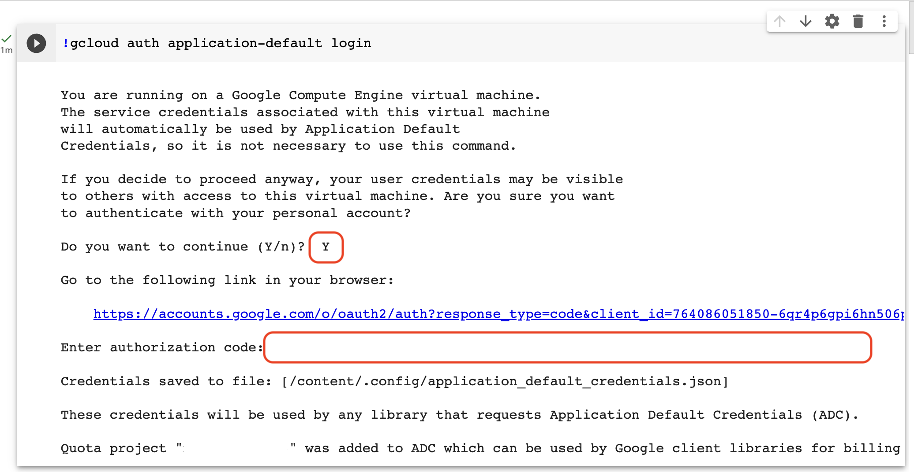

Malloy Python Package
Malloy Python Package

Malloy provides built-in IPython magic commands that allow you to define Malloy models and run Malloy queries inside of Jupyter notebooks. Click here to see a simple example of this in Colab.
Installation
In a Jupyter notebook, simply run the following commands to install Malloy from PyPI, and load the extension into your kernel:
!pip install malloy %reload_ext malloy
Usage
There are two IPython cell magic functions available: %%malloy_model and %%malloy_query
%%malloy_model
This magic function is used to declare or import a Malloy model. It takes a single parameter -- the variable name in which the Malloy model is stored. The contents of the cell can either be an import statement that points to a Malloy file containing sources and/or queries, or it can be a text field containing Malloy sources and/or queries.
Examples:
The following statement looks for a file called flights.malloy, attempts to read the file, and load any model contents (sources or queries) into a model called flights.
%%malloy_model flights import 'flights.malloy'
The flights model can then be referenced in future Malloy magic cells.
The following statement defines a model called flights using the cell's input text as the model definition:
%%malloy_model flights source: airports is duckdb.table('../data/airports.parquet') extend { primary_key: code measure: airport_count is count() } source: flights is duckdb.table('../data/flights.parquet') extend { rename: origin_code is origin destination_code is destination join_one: origin is airports with origin_code join_one: destination is airports with destination_code measure: flight_count is count() destination_count is destination.count() origin_count is origin.count() }
%%malloy_query
This magic function is used the execute a Malloy query. It has one required parameter: the name of the model to use. It optionally takes a second parameter: the variable name of the Pandas dataframe in which to store the result.
Examples:
The following statement loads the flights model and executes a query using the definitions in the file.
%% malloy_query flights run: flights -> { group_by: origin.full_name aggregate: flight_count destination_count }
The following statement executes a query, and stores the results in a pandas dataframe called result_df. This dataframe can then be used in any downstream process.
%% malloy_query flights result_df run: flights -> { group_by: origin.full_name aggregate: flight_count destination_count }
Connecting to BigQuery
The examples above all query files from DuckDB, but it's relatively easy to work with data in BigQuery inside of your Jupyter notebook. To do this, you'll need to authorize your notebook environment to speak to your GCP project. Do this with the gcloud command, as follows
!gcloud auth application-default loginThis command will prompt you to authenticate. Enter 'Y' in the textbox that asks "Do you want to continue (Y/n)?" (Note: this text box can be hidden/hard to find in some notebook renderers!). This will give you a link that takes you to a separate window that asks you to authenticate with your Google account. Select the correct account, copy the authentication code, and enter it into the input text field:
Once you've authenticated to GCP, you should be able to issue queries to BigQuery. You can define a Source that points to a table in BQ, and write a query against that source. Try running something against one of the BigQuery public datasets to confirm things are working.
First, create a cell that defines source on the GA4 sample data:
%%malloy_source ga4 source: events_table is bigquery.table('bigquery-public-data.ga4_obfuscated_sample_ecommerce.events_*')
Then create a cell that queries this source:
%%malloy_query ga4 run: events_table -> { group_by: event_name aggregate: row_count is count() }